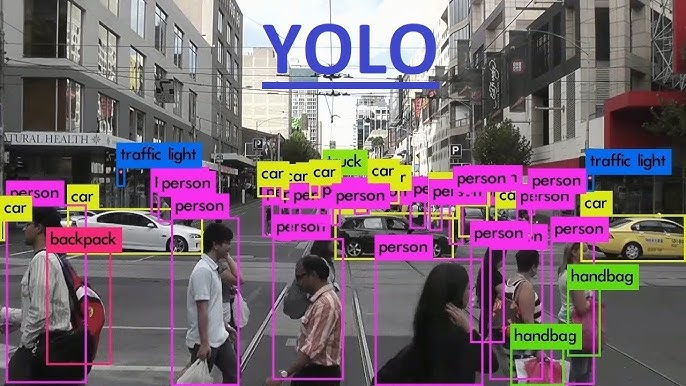
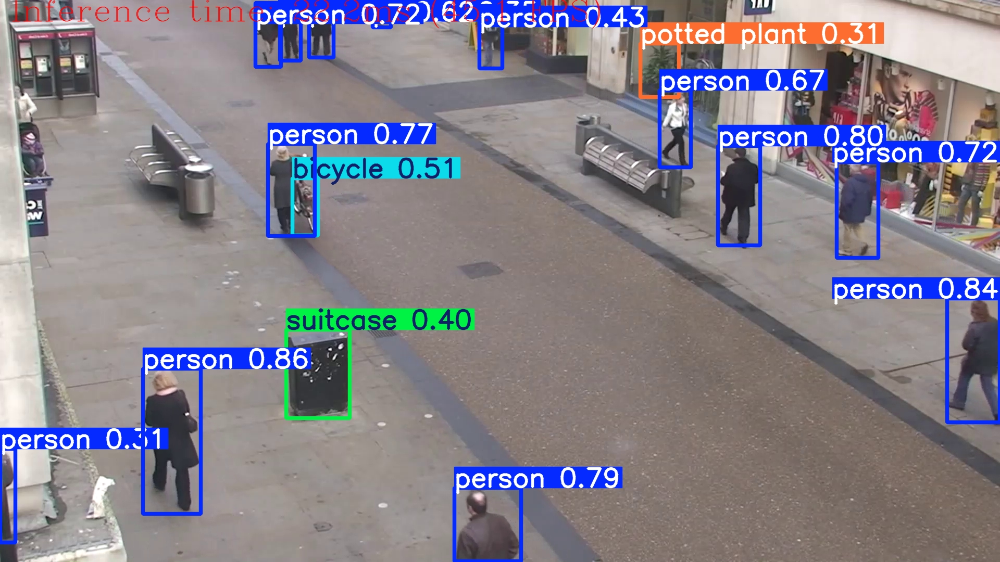

"Seeing Through a Computer's Eyes", Live object detection video importer
I have always been interested in intersecting my interests of film with coding. This website will allow you to import your video and control how much computer overlay you want over your video.
It makes videos look super cool.
← Back